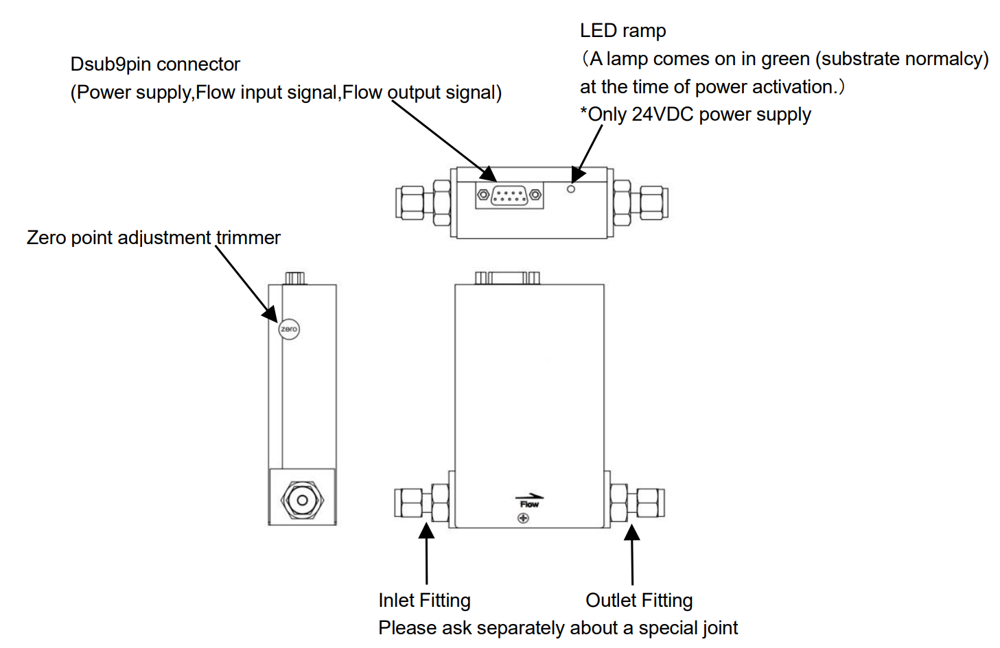
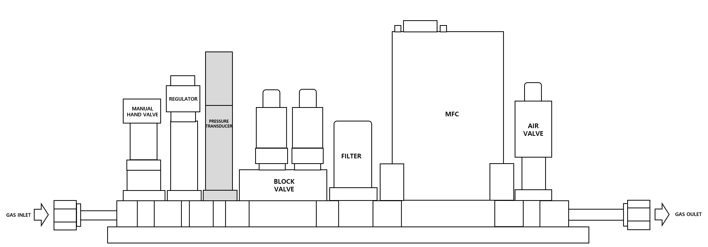

MFC 점검
① MFC Zero Point 점검

MFC의 구조
- Tube 내부를 펌핑하여 고진공 상태(VG13 < 1 Torr)로 만든다.
- Gas Line 내부를 N2 Gas로 퍼지한다.
- MFC 전원을 다시 연결한 경우, 5분 이상(권장 30분) 가스 흐름 없이 그대로 둔다. 웜업이 부족하면 유량 정확도가 저하된다.
- 영점 보정 전에 가스 흐름이 차단된 상태에서 유량을 확인한다.
가스 흐름이 없는 상태에서 1 SLM 이상 값이 나타나면 Zero Cal이 필요하다.
이후 가스를 흘려 유량 상태를 점검한다.
- 영점 보정 기능 사용 시 본체 내부 압력을 가할 경우 정상 보정되지 않는다.
가스 공급 중단 후 최소 1분 이상 경과 뒤 영점 보정 기능 사용을 권장한다.
- 영점 조정 버튼을 누른다.
- 영점 조정 이후, 가스 차단/흐름 상태에서의 유량 값을 이전과 비교한다.
- 영점 조정은 실제 유량 변화에 영향을 줄 수 있으므로 장기간 사용 중에는 권장되지 않는다. 최초 셋업 시에만 실시한다.
② RF Noise 점검
- Tube 내부 분위기를 RF Plasma가 ON될 수 있는 환경으로 만든다.
- Tube 내부 진공 상태 확인 (VG13 < 1 Torr).
- DCS MFC N2 가스를 흘려준다.
- RF ON 후 DCS MFC 유량 변화 여부를 점검한다.
- 유량 변화 발생 시 접지 추가, MFC 교체 등 추가 조치를 진행한다.
MFC 이외 점검
① 가스 압력 점검

GAS IGS(Integrated Gas System)의 구성
- 그림의 가스라인 구성에서 회색 음영 부분은 PT(Pressure Transducer) 센서이며,
압력 확인을 위해 먼저 가스가 차단된 상태에서 PT 센서 값을 확인한다.
- N2 가스를 흘릴 때 PT 센서의 압력을 확인하고, 정체/흐름 시 압력 상태를 비교한다.
- 가스 정체 시 입력이 비정상적으로 높은 경우 REGULATOR 고장 가능성이 있으므로 교체한다.
- 정체/흐름 상태가 셋업 기준과 다르면 가스 공급단 변화를 확인한다.
- 가스 공급단 이상이 없다면 PT 센서를 점검하거나 교체한다.